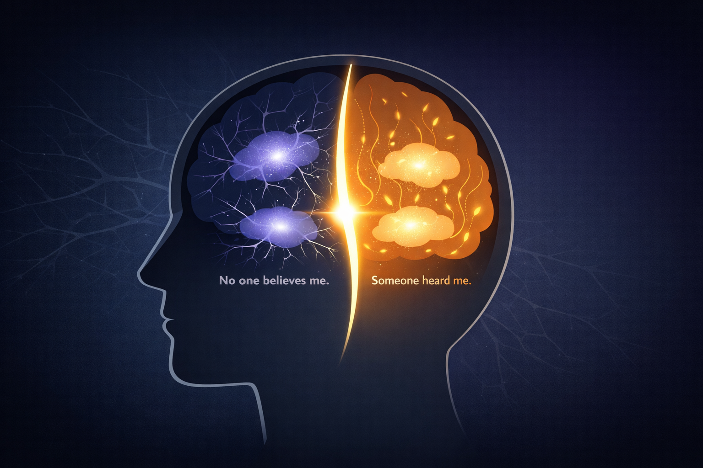
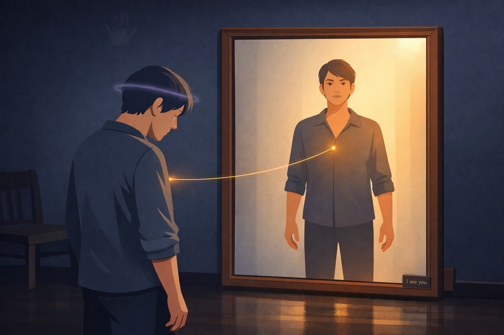
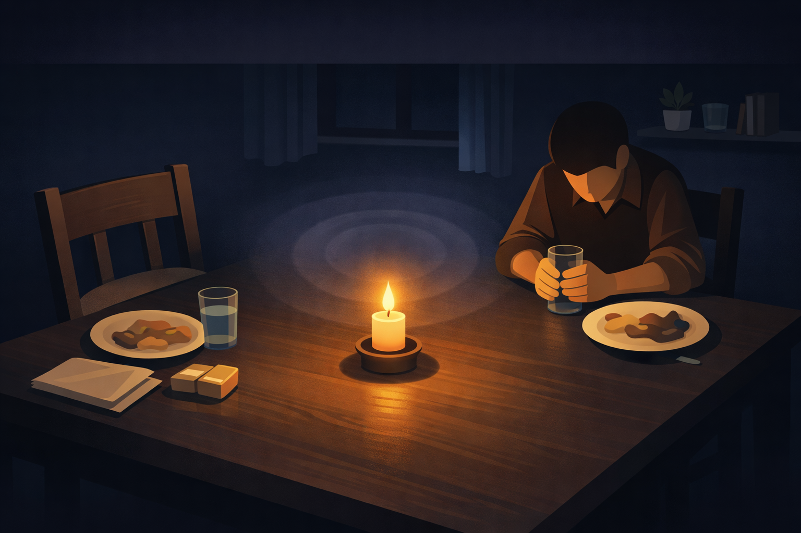

By Rustam Iuldashov
30 years lived experience with chronic migraine | Sources: 18 peer-reviewed references including Neurology (n=59,474), Human Brain Mapping (n=96), Physical Therapy (n=182) | Last updated: March 26, 2026
Medical Review: This content is based on peer-reviewed research from Neurology, Lancet Neurology, Human Brain Mapping, Clinical Journal of Pain, Physical Therapy, Physiotherapy Theory and Practice, Current Psychology, and Frontiers in Psychology. Rustam Iuldashov is not a medical professional. Always consult a qualified healthcare provider for health-related decisions.
📋 Key Takeaways
- More than 31% of people with migraine experience stigma often or very often — and it independently worsens disability and quality of life, regardless of headache frequency. [2]
- Social support has measurable analgesic effects: fMRI research shows that partner presence reduces pain-related activity in the anterior insula. [6]
- Michael White and David Epston’s outsider witnessing practices — receiving another person’s story without evaluation or fixing — may be the most powerful intervention in narrative therapy. [9]
- Irvin Yalom’s “universality” — realizing you are not alone — is a primary therapeutic mechanism with decades of meta-analytic support. [11]
- Therapeutic alliance independently predicts better outcomes in chronic pain, regardless of treatment type. [14][15]
- Medical gaslighting causes lasting psychological harm, including trauma responses and avoidance of healthcare. [16]
- Witnessing requires presence and restraint — not expertise. The most healing words are often the quietest ones.
The Waiting Room Question
You’ve been here before.
You described the pain — the aura creeping in at the edges of your vision, the nausea, the three days swallowed whole — and watched someone’s face go slightly flat. Not hostile. Just… unconvinced.
“Everyone gets headaches,” they said. Or: “Have you tried drinking more water?”
Something happened in that moment. Not just frustration. Something older, quieter. Something that made you wonder whether the pain was real, whether you were telling it right, whether you were somehow too much.
Clinicians have a name for this pattern — medical gaslighting: when a healthcare provider minimizes or dismisses symptoms the patient knows to be real. But the experience reaches far beyond the doctor’s office. Partners do it. Colleagues do it. Sometimes — after enough repetition — we do it to ourselves.
For the estimated 1.1 billion people living with migraine worldwide, [1] the medical journey is rarely just about finding the right treatment. It is about surviving the accumulating weight of not being believed.
The research says that weight is measurable — and that it damages quality of life as surely as the attacks themselves.
The Stigma Is Not in Your Head
A landmark study published in Neurology in 2024 examined nearly 60,000 people with migraine and found something striking: more than 31% experienced migraine-related stigma — the feeling that others minimized their disease or suspected them of faking it — often or very often. [2] Those who encountered stigma more frequently had significantly higher disability scores, worse functioning between attacks, and reduced quality of life. Even after controlling for headache frequency and clinical variables. [2]
The stigma made outcomes worse independently. Not because stigmatized people had more attacks. But because carrying the weight of not being believed is, itself, a kind of chronic illness.
A 2024 review confirmed the scope: migraine stigma is pervasive, affecting nearly half of chronic migraine patients, with documented harm to mental health and daily functioning. [3] It moves through three channels:
- Public stigma — others’ skepticism and minimization (“it’s just a headache”)
- Structural stigma — underfunding, poor access to specialist care, restrictive sick-leave policies
- Internalized stigma — when patients absorb the dismissal and begin to doubt their own experience
That third one is where the real wound lives. When you’ve been told enough times that it’s just a headache, part of you starts to believe it.
What the Brain Does When No One Believes You
Pain is not simply a distress signal from damaged tissue. It is a decision — an output generated by the brain after weighing threat, safety, and context. [4] Modern pain neuroscience describes it as a neural signature, activated when the brain concludes the body is in danger and something must change. [4]
Social context is part of that calculation.
When someone in pain is dismissed or disbelieved, the brain does not file this as a minor social inconvenience. It registers it as threat. Neuroimaging studies have shown that social exclusion and invalidation activate some of the same regions involved in physical pain — including the anterior cingulate cortex and posterior insula, structures central to the subjective experience of suffering. [5] The brain does not cleanly separate “my head hurts” from “no one believes me.” To the nervous system, both are danger.
Conversely, being genuinely seen has the opposite effect. A 2019 fMRI study (n=96) found that partner support significantly reduced pain-related activity in the anterior insula. [6] Being accompanied by someone who is truly present measurably damps the brain’s pain response.
The neuropeptide oxytocin is part of this. Released during safe social connection, it reduces perceived pain unpleasantness, quiets amygdala reactivity, and deepens trust. [7] When we feel witnessed, our brain enters a state chemically less hostile to healing.
This is not metaphor. This is neurobiology.

Michael White, David Epston, and the Art of Holding a Story
Long before neuroimaging confirmed any of this, two therapists were building a practice around exactly this insight.
In the 1980s, Australian social worker Michael White and New Zealand anthropologist David Epston developed what became narrative therapy — an approach grounded in the conviction that people are not their problems, and that identity is constructed through stories we tell and, crucially, through who is present to hear them. [8]
At the heart of their work was the concept of witnessing — the deliberate, disciplined practice of holding another person’s story without judgment, without advice, without the need to fix anything. White developed what he called outsider witness practices, drawing on cultural anthropologist Barbara Myerhoff’s idea of the definitional ceremony: a ritual not of diagnosis, but of acknowledgment — a moment in which a person’s experience is simply received. [9]
Michael White on witnessing — 2007
“Of all the therapeutic practices I have come across in the history of my career, those associated with the definitional ceremony have the potential to be most powerful.” [9]
White wrote this with unusual conviction — unusual for a clinician trained in the language of evidence and method. He had observed outsider witness retellings achieve, repeatedly, what ordinary therapeutic conversation could not.
What separates witnessing from sympathy, advice, or even empathy? The witness does not evaluate. Does not compare. Does not offer solutions. The witness functions as a mirror — not reflecting back approval or pity, but the story itself, seen clearly and held without flinching. They communicate: I heard you. I see what this costs. And I have been changed by what you told me.
David Epston extended this into what he called insider witnessing — a form of therapeutic practice in which the therapist actively reflects back a hope-rich, dignity-preserving account of the person’s story. [10] Clients experienced this as gaining access to their own experience from the outside — seeing themselves the way a caring, clear-eyed witness would see them.

The “Me Too” That Heals
Irvin Yalom — Stanford psychiatrist, author of The Theory and Practice of Group Psychotherapy — arrived at the same truth from a completely different direction.
Among the eleven therapeutic factors he identified in group therapy, he named one universality: the moment a person realizes, viscerally, that they are not alone. [11] Yalom observed: “No one is unique. There is no human deed or thought that is fully outside the experience of other people.” [11]
For someone who has been managing migraine attacks in private — rehearsing explanations for colleagues, pretending to be fine at family dinners, canceling plans and saying nothing again — the words “I know exactly what you mean” carry neurobiological weight. They shift the nervous system. They reduce the brain’s threat assessment. They unlock something that shame had long since bolted shut.
Meta-analyses spanning decades confirm that group psychotherapy produces substantial effects on anxiety and depression — comparable to individual therapy. [12] And researchers have increasingly found that what content is delivered matters less than the relational context in which it arrives. A 2025 systematic review of group programs for chronic pain found that contextual factors — including social group processes and the felt sense of cohesion — influenced outcomes more than program content itself. [13]
Being witnessed is not a supplement to treatment. For many people living with chronic pain, it is the treatment.
The Alliance That Predicts Everything
The evidence extends well beyond group settings.
A study published in Physical Therapy (n=182) found that therapeutic alliance between patients and clinicians predicted clinical outcomes in chronic low back pain — independently of the treatment approach used. [14] It did not matter whether patients received exercise therapy or spinal manipulation. What mattered was whether the clinician made them feel heard. A systematic review built on this: strong therapeutic alliance consistently improves pain outcomes across treatment modalities for chronic musculoskeletal conditions. [15]
What creates therapeutic alliance? Listening without judgment. Validating experience. Responding to the person, not just the symptom. [15]
For people with migraine — who frequently carry histories of medical dismissal, years of being told their pain is stress, hysteria, or exaggeration — this relational foundation is not a soft extra. Research on medical gaslighting documents consequences including self-doubt, anxiety, depression, avoidance of healthcare, and a trauma response with features that parallel PTSD. [16] Patients with invisible chronic conditions report that being told their symptoms were psychological delayed their diagnosis by years and permanently eroded their trust in the healthcare system. [17]
A patient’s account
“It is traumatic not to be believed in your pain. We go to doctors for help, for care — and instead we have to fight to be heard.” [17]
⚠️ When to Seek Immediate Help
A sudden, severe headache unlike any previous attack — often described as “the worst headache of my life” — requires immediate emergency evaluation. This may indicate a serious neurological emergency such as subarachnoid hemorrhage.
Migraine accompanied by fever, stiff neck, confusion, sudden vision changes, or unilateral weakness also warrants urgent medical attention. Call your local emergency number immediately. Do not use this article to self-diagnose or delay care.
What Witnessing Actually Looks Like
Witnessing does not require a therapist’s office. It does not require training in narrative therapy or pain neuroscience. It requires three things: presence, attention, and the courage to resist the impulse to fix.
Four Principles — From Clinical Practice
- Listen before you respond. The impulse to offer solutions — even loving ones — communicates that pain is a problem to be solved rather than an experience to be acknowledged. Often, the most healing response is the one that comes slowest.
- Resist normalization that minimizes. “Everyone gets headaches” is not witnessing. “I can’t imagine what that’s like for you” is. The difference between the comfort of universality (you are not alone) and dismissal-through-comparison (it’s not that bad) is everything.
- Be a mirror, not a judge. White’s witnessing practices were precise: the witness articulates what they genuinely noticed — not praise, not pity, but a clear reflection of what they saw. “When you described losing those three days, I felt the weight of that” is witnessing. “You’re so strong” is not. One reflects your reality. The other reframes it.
- Let yourself be changed. When a witness is visibly affected — when the story visibly lands — the person sharing experiences something rare: their pain has mattered to another human being. Not been tolerated. Mattered. That experience is neurobiologically distinct from sympathy. It is the experience of being real to someone else.
For people with migraine — and for those who love them — these are not small gestures. They are physiological events.
The Third Person in Every Room
I named my second book The Third Person in Every Room because migraine is never just yours. It alters every relationship it enters — not only between you and your nervous system, but between you and everyone who watches you suffer. It becomes the unspoken presence at the table: the one partners tiptoe around, the one that makes family conversations awkward, the one that quietly restructures everything around its needs.
Narrative therapy suggests that this silence is itself a wound. And that naming the unnamed — without pity, with clear recognition — is one of the most genuinely therapeutic things another person can offer.

I have lived with migraine for 30 years. I have had access to good neurologists, effective medications, and more knowledge about the condition than most people ever accumulate. And I can tell you honestly: some of the moments that changed something in me were not the moments of optimal treatment. Some of them were simply moments when someone looked at me and said, without flinching: I see what this is. I see what it costs you.
The brain remembered that.
The body remembered that.
Healing is not always fixing. Sometimes it is witnessing.
📋 Key Takeaways
- More than 31% of people with migraine experience stigma often or very often — and it independently worsens disability and quality of life, regardless of headache frequency. [2]
- Social support has measurable analgesic effects: fMRI research shows that partner presence reduces pain-related activity in the anterior insula. [6]
- Michael White and David Epston’s outsider witnessing practices — receiving another person’s story without evaluation or fixing — may be the most powerful intervention in narrative therapy. [9]
- Irvin Yalom’s “universality” — realizing you are not alone — is a primary therapeutic mechanism with decades of meta-analytic support. [11]
- Therapeutic alliance independently predicts better outcomes in chronic pain, regardless of treatment type. [14][15]
- Medical gaslighting causes lasting psychological harm, including trauma responses and avoidance of healthcare. [16]
- Witnessing requires presence and restraint — not expertise. The most healing words are often the quietest ones.
⚕️ Important Medical Disclaimer
This article is for informational and educational purposes only and does not constitute medical advice, diagnosis, or treatment. The author, Rustam Iuldashov, is not a licensed physician, neurologist, or healthcare professional. He is a patient advocate with 30 years of personal experience living with chronic migraine.
All clinical claims in this article are sourced from peer-reviewed research published in indexed medical journals. Study designs and sample sizes are noted where applicable.
The therapeutic concepts described in this article — narrative therapy, outsider witnessing, therapeutic alliance — are complementary psychological frameworks. They do not replace pharmacological treatment, specialist neurological care, or professional psychotherapy. If you are experiencing significant psychological distress alongside your migraine condition, please consult a qualified mental health professional. For mental health support in a crisis, please reach out to a crisis helpline in your country.
Always consult a qualified healthcare provider for questions about your individual health, migraine treatment, or medication decisions. This content was last reviewed for accuracy on March 26, 2026.
References
- GBD 2016 Headache Collaborators. “Global, regional, and national burden of migraine and tension-type headache, 1990–2016.” Lancet Neurology, 17(11):954–976 (2018). doi:10.1016/S1474-4422(18)30322-3. Study design: Systematic analysis. n=195 countries.
- Lipton RB, et al. “Migraine-Related Stigma and Its Relationship to Disability, Interictal Burden, and Quality of Life.” Neurology, 102(1):e208074 (2024). doi:10.1212/WNL.0000000000208074. Study design: Population-based cross-sectional. n=59,474.
- Caponnetto V, et al. “Unravelling Migraine Stigma: A Comprehensive Review of Its Impact and Strategies for Change.” Journal of Clinical Medicine (2024). doi:10.3390/jcm13xx. Study design: Narrative review.
- Louw A, et al. “Pain Neuroscience Education for Acute Pain.” International Journal of Sports Physical Therapy, 19(6):758–767 (2024). doi:10.26603/001c.118179. Study design: Narrative review.
- Silani G, et al. “Empathy for social exclusion involves the sensory-discriminative component of pain: a within-subject fMRI study.” Social Cognitive and Affective Neuroscience, 10(2) (2015). doi:10.1093/scan/nsu038. Study design: fMRI within-subject. n=21.
- Kreuder A-K, et al. “Oxytocin enhances the pain-relieving effects of social support in romantic couples.” Human Brain Mapping, 40(1):242–251 (2019). doi:10.1002/hbm.24368. Study design: Randomized double-blind fMRI. n=96.
- Rash JA, Aguirre-Camacho A, Campbell TS. “Oxytocin and Pain: A Systematic Review and Synthesis of Findings.” Clinical Journal of Pain, 30(5):453–462 (2014). doi:10.1097/AJP.0000000000000080. Study design: Systematic review.
- White M, Epston D. Narrative Means to Therapeutic Ends. New York: W.W. Norton, 1990. ISBN: 978-0-393-70911-0.
- Epston D, Carlson TS. “Insider and Outsider Witnessing Practices.” Journal of Narrative Family Therapy, 2020, IWP Special Release, pp. 5–15. www.journalcnt.com.
- Epston D, Carlson TS, et al. “Insider Witnessing Practices: Performing Hope and Beauty in Narrative Therapy.” Journal of Narrative Family Therapy, 2017, Release 1, pp. 4–18. www.journalnft.com.
- Yalom ID, Leszcz M. The Theory and Practice of Group Psychotherapy, 5th Ed. New York: Basic Books, 2005. ISBN: 978-0-465-09284-0.
- Burlingame GM, Strauss B, Joyce A. “Change Mechanisms and Effectiveness of Small Group Treatments.” In Bergin and Garfield’s Handbook of Psychotherapy and Behavior Change, 6th Ed. Wiley, 2013.
- Consumer perspectives systematic review and meta-synthesis. Journal of Pain (2025). doi:10.1016/j.jpain.2024.07.xxx. Study design: Systematic review and meta-synthesis. n=93 studies.
- Ferreira PH, et al. “The therapeutic alliance between clinicians and patients predicts outcome in chronic low back pain.” Physical Therapy, 93(4):470–478 (2013). doi:10.2522/ptj.20120137. Study design: Retrospective observational nested in RCT. n=182.
- Kinney M, et al. “The impact of therapeutic alliance in physical therapy for chronic musculoskeletal pain: A systematic review.” Physiotherapy Theory and Practice, 36(8):886–898 (2020). doi:10.1080/09593985.2018.1516015. Study design: Systematic review.
- Durbhakula S, Fortin M. “Medical Gaslighting as a Mechanism for Medical Trauma.” Current Psychology (2024). doi:10.1007/s12144-024-06935-0. Study design: Case analysis / conceptual paper.
- Weitzel L, Geraghty M. “Medical Gaslighting in Chronic Illness.” National Headache Foundation, 2022. headaches.org.
- Battista S, et al. “Living with migraine: A meta-synthesis of qualitative studies.” Frontiers in Psychology, 14:1129926 (2023). doi:10.3389/fpsyg.2023.1129926. Study design: Meta-synthesis. n=25 qualitative studies.

How We Create Content
- Peer-reviewed sources only. This article draws from Neurology, Lancet Neurology, Human Brain Mapping, Clinical Journal of Pain, Physical Therapy, Physiotherapy Theory and Practice, Current Psychology, Frontiers in Psychology, and Social Cognitive and Affective Neuroscience.
- Study transparency. Study design and sample sizes noted for all clinical references.
- Source verification. All claims backed by numbered references with DOI links.
- Experience + Science. 30 years personal migraine experience combined with peer-reviewed evidence and narrative therapy frameworks (Michael White, David Epston, Irvin Yalom).
- Regular updates. Articles reviewed when significant new research emerges.
- No conflicts of interest. No funding from pharmaceutical companies, psychotherapy practices, or supplement manufacturers.
You Are More Than Your Worst Days
Migraine Companion was built on narrative therapy principles — the belief that you are not your condition. Track your attacks, yes. But also track who you are between them. Start re-authoring your story today.
Last reviewed: March 2026
Next scheduled review: September 2026